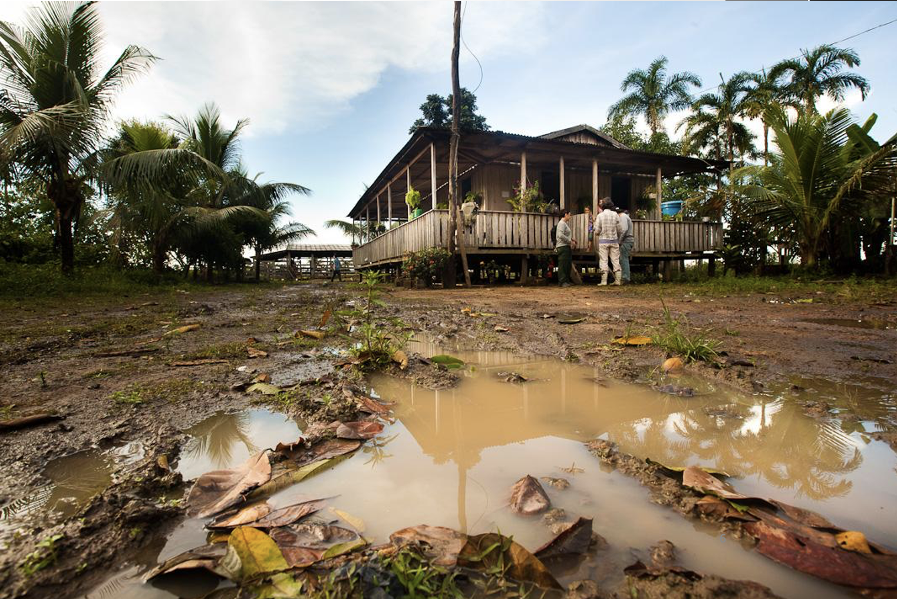

Fieldwork
From the Brazilian Amazon to mainland and island ecosystems in Africa.

Amazon – Field Collection

Africa – Field Collection
I am a Brazilian mosquito population geneticist with a passion for understanding the evolutionary and genomic processes shaping mosquito populations and their role in disease transmission. My scientific journey began with local studies in Brazil, expanded into the Brazilian Amazon during my PhD, and later took me to international research projects across Africa, where I explored the population genetics and genomics of mosquito vectors of human malaria.
My research interests span population genetics and genomics, insecticide resistance, vector ecology, and the evolutionary dynamics of mosquito populations. I am particularly interested in combining large-scale field collections and genomic data with functional approaches to better understand the biological mechanisms underlying patterns observed in nature. Beyond research, I enjoy exploring how data science, interdisciplinary collaborations, and science communication can turn scientific discoveries into meaningful contributions to public health and vector control.
Bachelor of Biomedical Sciences · PhD in Genetics
Foundations in mosquito vector biology, and population genetics.
Research Assistant
Bioinformatics, population genomics, parasite-vector interaction
Postdoctoral Position · Project Scientist
Population genomics, hybridization, local adaptation, evolutionary genetics, deployment of gene drive mosquitoes.
From the Brazilian Amazon to mainland and island ecosystems in Africa.
